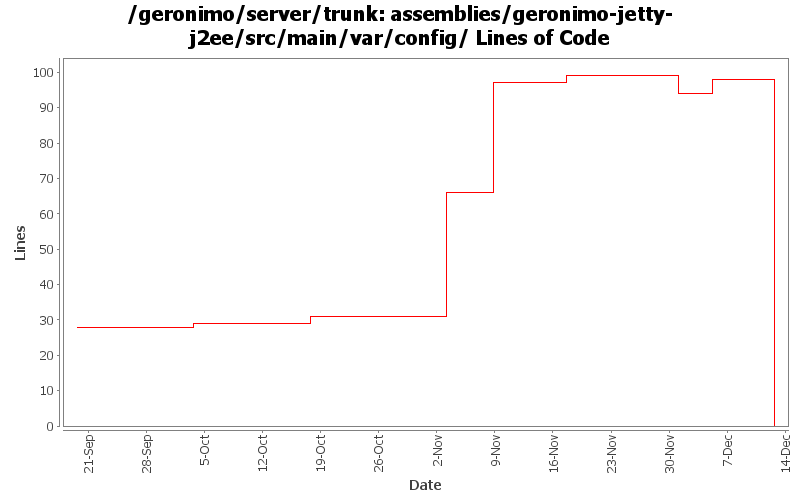

[root]/assemblies/geronimo-jetty-j2ee/src/main/var/config

| Author | Changes | Lines of Code | Lines per Change |
|---|---|---|---|
| Totals | 17 (100.0%) | 141 (100.0%) | 8.2 |
| djencks | 7 (41.2%) | 47 (33.3%) | 6.7 |
| jlaskowski | 2 (11.8%) | 35 (24.8%) | 17.5 |
| rickmcguire | 1 (5.9%) | 29 (20.6%) | 29.0 |
| jdillon | 3 (17.6%) | 27 (19.1%) | 9.0 |
| vamsic007 | 1 (5.9%) | 2 (1.4%) | 2.0 |
| pmcmahan | 1 (5.9%) | 1 (0.7%) | 1.0 |
| jbohn | 2 (11.8%) | 0 (0.0%) | 0.0 |
Remove jetty 5 j2ee assembly from trunk
0 lines of code changed in 2 files:
GERONIMO-2624 Fix offline deployer. Remove geronimo-deployment from boot classpath and update lists of deployers
4 lines of code changed in 1 file:
GERONIMO-2616 change tx config is config.xmls also, all servers should start now
1 lines of code changed in 1 file:
include jetty-deployer explicitly, make it easier to turn on corba, remove non-existent config remains
4 lines of code changed in 1 file:
GERONIMO-2413 Add a Certification Authority (CA) portlet to Geronimo console
2 lines of code changed in 1 file:
GERONIMO-2460 Copy jpa support into trunk. jetty-j2ee server only so far. Daytrader w/preenhanced classes works, runtime enhancement not yet tested
36 lines of code changed in 1 file:
GERONIMO-2537 All Geronimo source files must be brought in line with the new ASF source header and copyright notice policy
Fix for assemblies + svn propset svn:keywords
35 lines of code changed in 2 files:
Using ${version} instead of ${pom.version} in a feeble attempt to get around ${pom.version} changing to its timestamp version for SNAPSHOT artifacts
27 lines of code changed in 1 file:
GERONIMO-2499, OPENEJB-280. Generalize NamingBuilder slightly, use new corba runtime and deploy time configs. I don't think all the builders are fully wired up yet
2 lines of code changed in 1 file:
GERONIMO-2465 Relocate plugin repository list to a source controlled location
1 lines of code changed in 1 file:
fixed previous checkin
add keywords/props
0 lines of code changed in 2 files:
GERONIMO-2180 Add Yoko ORB support to openejb/Geronimo
29 lines of code changed in 1 file:
GERONIMO-2398 Create transaction and connector-deployer configs, clean up a lot of dependency problems, and fix major app client module builder classloader bugs
0 lines of code changed in 2 files: